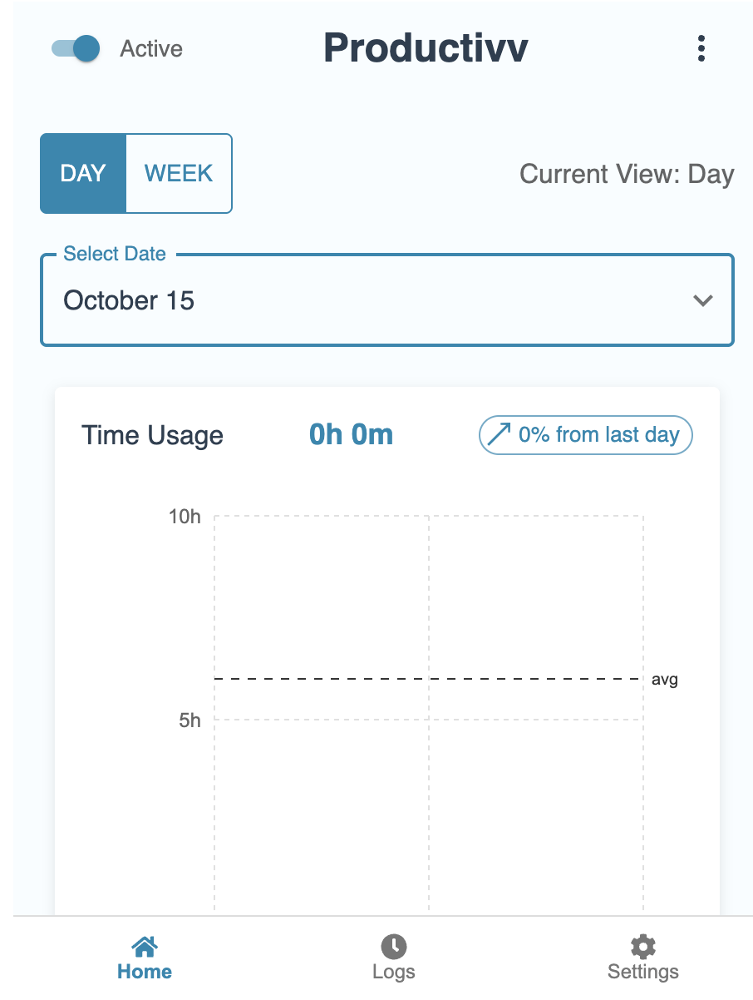

Projects

Productivv (WIP)
React • Python • MongoDB • JavaScript
- Developing a browser extension that uses Python AI and MongoDB to evaluate user productivity.
- Integrated full-stack architecture with automated data tracking and intuitive UI built in React.
AI Traffic Simulator (WIP)
Python • Pygame • PyTorch
- Building a real-time traffic simulation using object-oriented Python architecture and Pygame.
- Implementing car movement, traffic light logic, and stop-line detection with AI light control logic.

Student Grade Tracker
HTML • CSS • JavaScript • PHP • MySQL
- Developed a full-stack web app to track and visualize student grades with secure MySQLi queries.
- Implemented CRUD functionality using PHP and SQL to improve data retrieval and user experience.